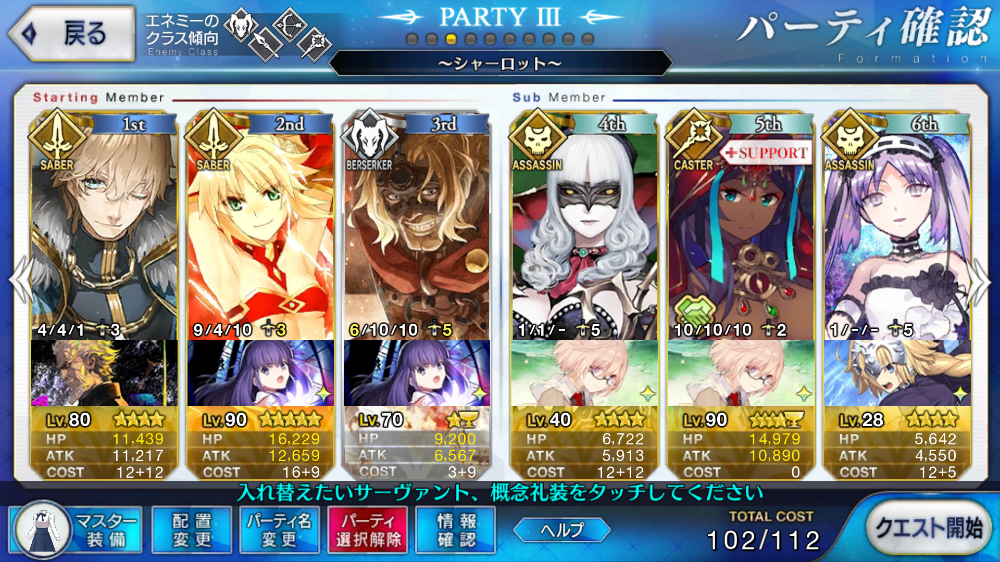

<!DOCTYPE HTML>
<html>
<head><meta name="generator" content="Hexo 3.9.0">
  <meta charset="utf-8">
  
  <title>【FGO】シャーロット 虚影の塵集め 周回 | ぷらずま式改</title>
  <meta name="author" content="NPlasma">

  
  <meta name="description" content="NPlasmaの個人メモ">
  

  

  <meta name="viewport" content="width=device-width, initial-scale=1, maximum-scale=1">

  <meta property="og:title" content="【FGO】シャーロット 虚影の塵集め 周回">
  <meta property="og:site_name" content="ぷらずま式改">

  
  

  
    <meta property="og:image" content="/img/ogp.png">
  

  <!-- ogp -->
  
    
      <meta name="description" content="この記事ではFGOフリークエストの周回を扱います。編成画像にて最終再臨絵のネタバレがあるのでご注意を">
<meta name="keywords" content="Fate,ゲーム,FGO,Fate&#x2F;GrandOrder,フリクエ周回">
<meta property="og:type" content="article">
<meta property="og:title" content="【FGO】シャーロット 虚影の塵集め 周回">
<meta property="og:url" content="http://elleonard.github.io/nplus_doc/2018/03/25/game/fate/fgo/freequest/charlotte-dust/index.html">
<meta property="og:site_name" content="ぷらずま式改">
<meta property="og:description" content="この記事ではFGOフリークエストの周回を扱います。編成画像にて最終再臨絵のネタバレがあるのでご注意を">
<meta property="og:locale" content="ja">
<meta property="og:image" content="http://elleonard.github.io/nplus_doc/2018/03/25/game/fate/fgo/freequest/charlotte-dust/charlotte-dust.png">
<meta property="og:updated_time" content="2019-10-28T01:45:49.162Z">
<meta name="twitter:card" content="summary">
<meta name="twitter:title" content="【FGO】シャーロット 虚影の塵集め 周回">
<meta name="twitter:description" content="この記事ではFGOフリークエストの周回を扱います。編成画像にて最終再臨絵のネタバレがあるのでご注意を">
<meta name="twitter:image" content="http://elleonard.github.io/nplus_doc/2018/03/25/game/fate/fgo/freequest/charlotte-dust/charlotte-dust.png">
<meta name="twitter:creator" content="@elleonard_f">
    
    <meta name="twitter:image" content="http://elleonard.github.io/nplus_doc/img/ogp.png">
  

  <link rel="alternate" href="/nplus_doc/atom.xml" title="ぷらずま式改" type="application/atom+xml">
  <link rel="stylesheet" href="/nplus_doc/css/style.css" media="screen" type="text/css">
  <!--[if lt IE 9]><script src="//html5shiv.googlecode.com/svn/trunk/html5.js"></script><![endif]-->
  


  <link rel="apple-touch-icon" sizes="180x180" href="/nplus_doc/favicon/apple-touch-icon.png">
  <link rel="icon" type="image/png" sizes="32x32" href="/nplus_doc//favicon/favicon-32x32.png">
  <link rel="icon" type="image/png" sizes="16x16" href="/nplus_doc//favicon/favicon-16x16.png">
  <link rel="manifest" href="/nplus_doc//favicon/site.webmanifest">
  <link rel="mask-icon" href="/nplus_doc//favicon/safari-pinned-tab.svg" color="#5bbad5">
  <meta name="msapplication-TileColor" content="#da532c">
  <meta name="theme-color" content="#ffffff">
</head>
</html>

<body>
  <header id="header" class="inner"><div class="alignleft">
  <h1><a href="/nplus_doc/">ぷらずま式改</a></h1>
  <h2><a href="/nplus_doc/">NPlasma個人メモ</a></h2>
</div>
<nav id="main-nav" class="alignright">
  <ul>
    
      <li><a href="/">Home</a></li>
    
      <li><a href="/nplus_doc/2016/05/29/about/">About</a></li>
    
      <li><a href="https://twitter.com/elleonard_f">Twitter</a></li>
    
      <li><a href="https://github.com/elleonard">GitHub</a></li>
    
      <li><a href="/nplus_doc/2018/02/09/game/fate/fgo/fgo-link/">FGO</a></li>
    
  </ul>
  <div class="clearfix"></div>
</nav>
<div class="clearfix"></div></header>
  <div id="content" class="inner">
    <div id="main-col" class="alignleft"><div id="wrapper"><article class="post">
  
  <div class="post-content">
    <header>
      
        <div class="icon"></div>
        <time datetime="2018-03-25T05:40:14.000Z"><a href="/nplus_doc/2018/03/25/game/fate/fgo/freequest/charlotte-dust/">2018-03-25</a></time>
      
      
  
    <h1 class="title">【FGO】シャーロット 虚影の塵集め 周回</h1>
  

    </header>
    <div class="entry">
      
        <div id="toc" class="toc-article">
          <p class="toc-title">目次</p>
          <ol class="toc"><li class="toc-item toc-level-1"><a class="toc-link" href="#基本方針"><span class="toc-text">基本方針</span></a></li><li class="toc-item toc-level-1"><a class="toc-link" href="#ドロップアイテム"><span class="toc-text">ドロップアイテム</span></a></li><li class="toc-item toc-level-1"><a class="toc-link" href="#編成"><span class="toc-text">編成</span></a></li><li class="toc-item toc-level-1"><a class="toc-link" href="#周回用キャラ選別"><span class="toc-text">周回用キャラ選別</span></a><ol class="toc-child"><li class="toc-item toc-level-2"><a class="toc-link" href="#アーラシュ"><span class="toc-text">アーラシュ</span></a></li><li class="toc-item toc-level-2"><a class="toc-link" href="#スパルタクス"><span class="toc-text">スパルタクス</span></a></li><li class="toc-item toc-level-2"><a class="toc-link" href="#ガウェイン"><span class="toc-text">ガウェイン</span></a></li><li class="toc-item toc-level-2"><a class="toc-link" href="#モードレッド"><span class="toc-text">モードレッド</span></a></li></ol></li></ol>
        </div>
        <p>この記事ではFGOフリークエストの周回を扱います。<br>編成画像にて最終再臨絵のネタバレがあるのでご注意を</p>
<a id="more"></a>

<h1 id="基本方針"><a href="#基本方針" class="headerlink" title="基本方針"></a>基本方針</h1><ul>
<li>3T周回する</li>
</ul>
<h1 id="ドロップアイテム"><a href="#ドロップアイテム" class="headerlink" title="ドロップアイテム"></a>ドロップアイテム</h1><ul>
<li>虚影の塵</li>
<li>英雄の証</li>
</ul>
<h1 id="編成"><a href="#編成" class="headerlink" title="編成"></a>編成</h1><p></p>
<p>オダチェン、ステラ、マーリン、孔明全て使わないパターン。<br>前衛三人だけで完結するため、後ろには絆上げ要員を。</p>
<p>1wはスパルタクス。<br>2wはガウェイン。<br>ガウェインはスキル強化で強制的に日差しフィールドをセットできるようになったため、強化クエストさえ済ませておけば火力は十分。<br>3wはモードレッド。</p>
<h1 id="周回用キャラ選別"><a href="#周回用キャラ選別" class="headerlink" title="周回用キャラ選別"></a>周回用キャラ選別</h1><h2 id="アーラシュ"><a href="#アーラシュ" class="headerlink" title="アーラシュ"></a>アーラシュ</h2><p>1wには槍がいないので、いつもの</p>
<h2 id="スパルタクス"><a href="#スパルタクス" class="headerlink" title="スパルタクス"></a>スパルタクス</h2><p>アーラシュを使いたくない場合に</p>
<h2 id="ガウェイン"><a href="#ガウェイン" class="headerlink" title="ガウェイン"></a>ガウェイン</h2><p>NP+20できる全体セイバー<br>カレスコと合わせて2wを処理できる<br>スキルや銀フォウが半端だとシャドウサーヴァントを撃ち漏らすが、バーサーカーなので追撃は容易</p>
<h2 id="モードレッド"><a href="#モードレッド" class="headerlink" title="モードレッド"></a>モードレッド</h2><p>3w要員<br>NP+30してバフ盛ってぶっぱ<br>自分の魔力放出とアニバーサリー・ブロンドの魔力放出で銀フォウをしっかり盛っていれば確殺<br>バスターアップが重複するので、2004年の断片のコードFや初期礼装の瞬間強化でも良さそう</p>

      
    </div>
    
    <footer>
        <div class="alignright">
            <a href="https://twitter.com/share?ref_src=twsrc%5Etfw" class="twitter-share-button" data-text="【FGO】シャーロット 虚影の塵集め 周回 | ぷらずま式改" data-url="http://elleonard.github.io/nplus_doc/2018/03/25/game/fate/fgo/freequest/charlotte-dust/" data-via="elleonard_f" data-show-count="false">Tweet</a><script async src="https://platform.twitter.com/widgets.js" charset="utf-8"></script>
        </div>
        
  
  <div class="categories">
    <a href="/nplus_doc/categories/FGO/">FGO</a>
  </div>

        
  
  <div class="tags">
    <a href="/nplus_doc/tags/Fate/">Fate</a>, <a href="/nplus_doc/tags/ゲーム/">ゲーム</a>, <a href="/nplus_doc/tags/FGO/">FGO</a>, <a href="/nplus_doc/tags/Fate-GrandOrder/">Fate/GrandOrder</a>, <a href="/nplus_doc/tags/フリクエ周回/">フリクエ周回</a>
  </div>

        
          <div class="article-prev">
              <a href="/nplus_doc/2018/03/31/game/fate/fgo/freequest/barreltower-gear/">【FGO】バレルタワー 無間の歯車集め 周回 <span class="prev-arrow"/></a>
            </div>
        
        
          <div class="article-next">
            <a href="/nplus_doc/2018/03/21/game/fate/fgo/saberwars/saberwars-super-space-time/">【FGO】復刻：セイバーウォーズ ～リリィのコスモ武者修行～ ライト版 超時空級 <span class="next-arrow"/></a>
          </div>
        
        <!-- partial('post/share') -->
      <div class="clearfix"></div>
    </footer>
  </div>
</article>


</div></div>
    <aside id="sidebar" class="alignright">
  <div class="search">
  <form action="//google.com/search" method="get" accept-charset="utf-8">
    <input type="search" name="q" results="0" placeholder="検索">
    <input type="hidden" name="q" value="site:elleonard.github.io/nplus_doc">
  </form>
</div>

  
<div class="widget tag">
  <h3 class="title">カテゴリ</h3>
  <ul class="entry">
  
    <li><a href="/nplus_doc/categories/FGO/">FGO</a><small>47</small></li>
  
    <li><a href="/nplus_doc/categories/niconico/">niconico</a><small>3</small></li>
  
    <li><a href="/nplus_doc/categories/アニメ感想/">アニメ感想</a><small>9</small></li>
  
    <li><a href="/nplus_doc/categories/ゲーム/">ゲーム</a><small>42</small></li>
  
    <li><a href="/nplus_doc/categories/ゲーム/ゲームレビュー/">ゲームレビュー</a><small>31</small></li>
  
    <li><a href="/nplus_doc/categories/ゲーム制作/">ゲーム制作</a><small>7</small></li>
  
    <li><a href="/nplus_doc/categories/遊戯王ブロンティーズ/デッキレシピ/">デッキレシピ</a><small>4</small></li>
  
    <li><a href="/nplus_doc/categories/小説/">小説</a><small>3</small></li>
  
    <li><a href="/nplus_doc/categories/情報技術/">情報技術</a><small>11</small></li>
  
    <li><a href="/nplus_doc/categories/漫画/">漫画</a><small>2</small></li>
  
    <li><a href="/nplus_doc/categories/百合/">百合</a><small>6</small></li>
  
    <li><a href="/nplus_doc/categories/艦これ/">艦これ</a><small>76</small></li>
  
    <li><a href="/nplus_doc/categories/遊戯王ブロンティーズ/">遊戯王ブロンティーズ</a><small>4</small></li>
  
    <li><a href="/nplus_doc/categories/雑記/">雑記</a><small>4</small></li>
  
  </ul>
</div>


  
<div class="widget tag">
  <h3 class="title">最近の投稿</h3>
  <ul class="entry">
    
      <li>
        <a href="/nplus_doc/2019/12/31/misc/2019/">2019年の振り返り</a>
      </li>
    
      <li>
        <a href="/nplus_doc/2019/11/28/engineering/rmmv/good-plugin/">RPGツクールMV 良いプラグインとは</a>
      </li>
    
      <li>
        <a href="/nplus_doc/2019/11/16/game/pokemon/pikachu-ev/">【ゲーム感想】ポケットモンスター Let&#39;s Go! イーブイ</a>
      </li>
    
      <li>
        <a href="/nplus_doc/2019/11/05/novel/kindaichi-kosuke/">【小説感想】金田一耕助ファイル 全22冊合本版</a>
      </li>
    
      <li>
        <a href="/nplus_doc/2019/11/01/engineering/rmmv/yanfly-retirement-announcement/">Yanfly氏の引退表明和訳</a>
      </li>
    
  </ul>
</div>


  
<div class="widget tag">
  <h3 class="title">Link</h3>
  <ul class="entry">
    
      <li>
        <a href="https://www.nicovideo.jp/">niconico</a>
      </li>
    
      <li>
        <a href="http://lovingtheflags1986.blog96.fc2.com/">国旗と酒が待ち遠しいドリル日記</a>
      </li>
    
  </ul>
</div>


</aside>
    
    <div class="clearfix"></div>
  </div>
  <footer id="footer" class="inner"><div class="alignleft">
  <p>
  
  &copy; 2019 NPlasma
  
  All rights reserved.</p>
  <p>Powered by <a href="http://hexo.io/" target="_blank">Hexo</a></p>
</div>
<div class="clearfix"></div>
</footer>
  <script src="/nplus_doc/js/jquery.imagesloaded.min.js"></script>
<script src="/nplus_doc/js/gallery.js"></script>


<link rel="stylesheet" href="/nplus_doc/fancybox/jquery.fancybox.css" media="screen" type="text/css">
<script src="/nplus_doc/fancybox/jquery.fancybox.pack.js"></script>
<script type="text/javascript">
(function($){
  $('.fancybox').fancybox();
})(jQuery);
</script>


<div id='bg'></div>
</body>
</html>
